|
|
| hard corals text index | photo index |
| Phylum Cnidaria > Class Anthozoa > Subclass Zoantharia/Hexacorallia > Order Scleractinia > Family Acroporidae > Montipora sp. |
Ridged
montipora coral Where seen? This hard coral with an obvious ridged texture is sometimes seen on some of our Southern shores. Features: Colonies seen 15-20cm, sometimes much larger. Branches, columns or knobs arising from the centre of an encrusting base. Branches angular, flattened and irregular. The tips of the branches may be squarish and flattened, forming fan-shaped or knobbly tips, white and smooth, lacking polyps. Large ridges and bumps between the corallites, about the same size as the polyps. Colours usually brown, pinkish, greenish with brown polyps. Polyps tiny (0.2cm or smaller) with short tentacles and short body column. May be mistaken for some branching Pore coral species which look similar. For convenience of display, all branching species that resemble Montipora are featured here. At Sentosa Serapong, large colonies of these corals are often festooned with many Red feather stars. There are probably several different species on this page. It's hard to distinguish them without close examination of small features and they are grouped by large external features for convenience of display. |
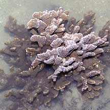 Kusu Island, May 07 |
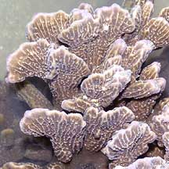 |
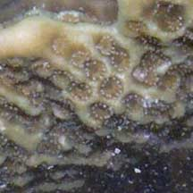 |
|
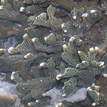 Sentosa Serapong, Jul 11 |
|
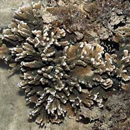 Pulau Semakau, Apr 08 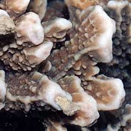 |
 Kusu Island, Feb 07  |
|
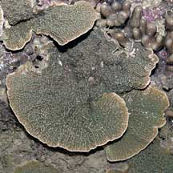 Raffles Lighthouse, Jul 06 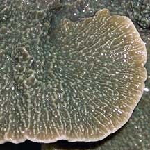 |
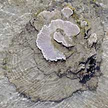 Beting Bemban Besar, May 10 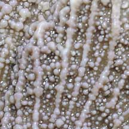 |
 Raffles Lighthouse,Jul 6  |
*Species are difficult to positively identify without close examination.
On this website, they are grouped by external features for convenience of display.
| Ridged montipora corals on Singapore shores |
On wildsingapore
flickr
|
| Other sightings on Singapore shores |
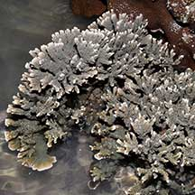 Tanah Merah Ferry Terminal, Jun 22 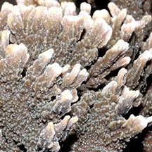 Photo shared by Loh Kok Sheng on facebook. |
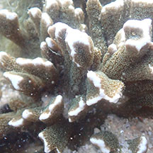 St John's Island, Apr 25 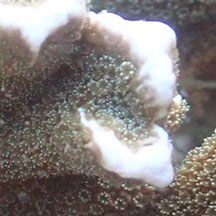 Photo shared by Low Liong Leong on facebook . |
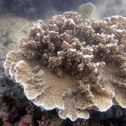 Terumbu Hantu, Jun 13 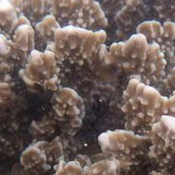 Photo shared by Loh Kok Sheng on flickr. |